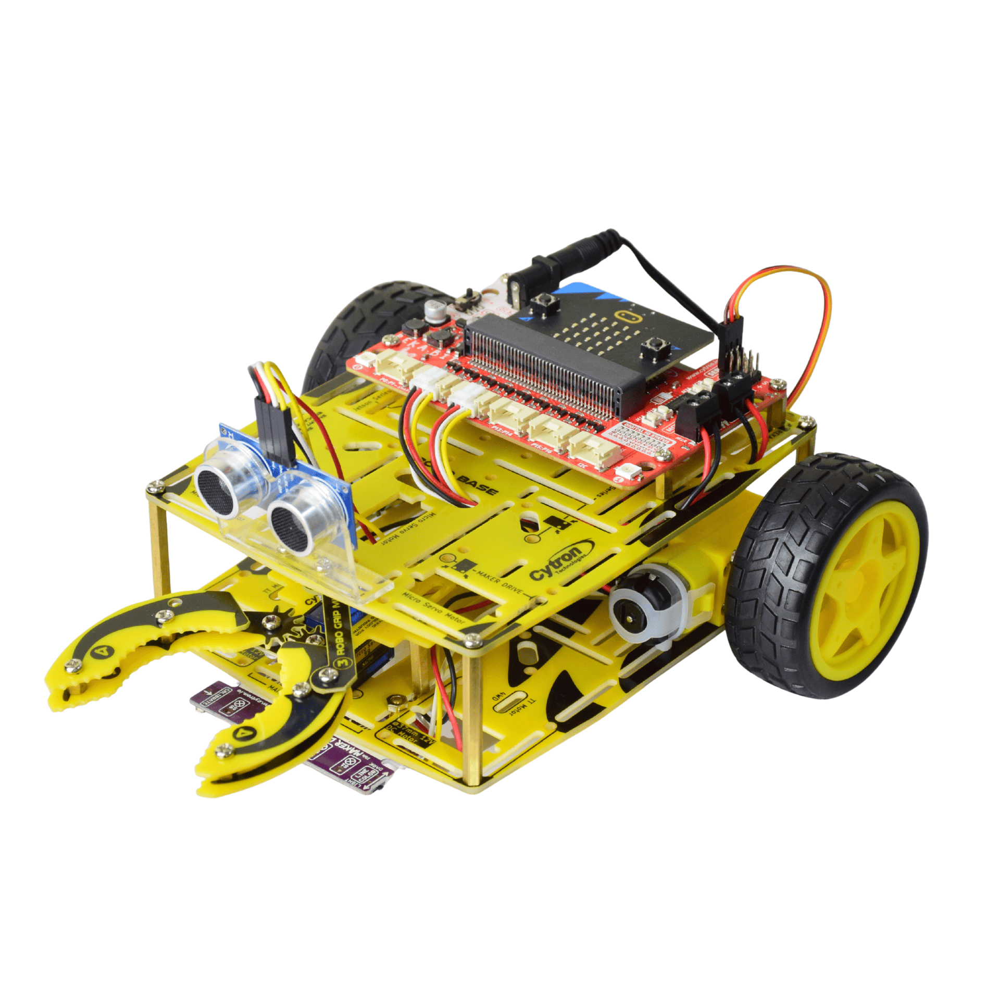
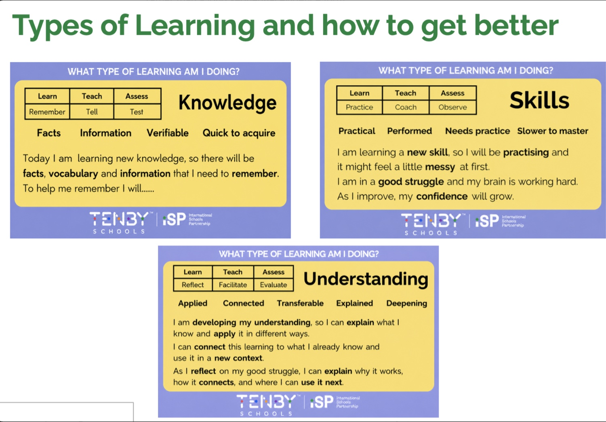
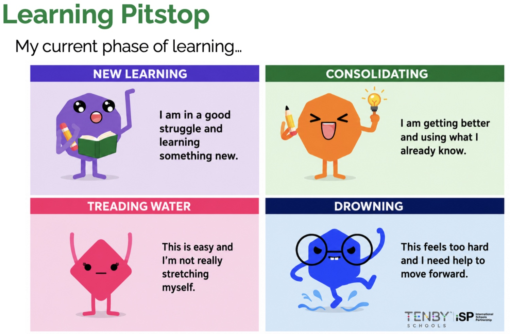

Ask your partner to point to each event block while you say its input and output. Fix one mismatch and retest.
Card 1 of 12
Start
Mission briefing · 3 minutes
A battery has fallen into the no-touch zone.
Your future BEETLE:BIT must collect it with its gripper. Before we connect wheels or motors, the engineering team must prove that its micro:bit can receive a precise command and show the correct action.
Today’s engineering question
How can a tiny computer turn a button press into an action that a robot can follow safely?

Which instruction could a robot actually follow?
🤖 START⬜⚠️🔋 TARGET
The rover cannot guess what “there” means. Select the instruction that is precise enough to test.
Choose one instruction, then explain why.
Knowledge, Skills and Understanding work together.

KnowledgeFacts, vocabulary and information to remember.Today: micro:bit, input, processor, output, event.
SkillsPractical performance that improves through practice.Today: predict, build, run, test and debug.
UnderstandingLearning you can explain, connect and apply.Today: explain why the same program idea can control LEDs now and motors later.
What is a micro:bit?
Choose the engineering description, not just the description of what it looks like.
Select the most complete description.
In our missionThe micro:bit runs the instructions. The BEETLE:BIT board, motors and gripper are the physical robot parts it will later control.
Find the parts our mission needs.

Use the official diagram, then match each job to one part.
Trace one command through the system.
INPUT?Something enters the system
→
PROCESS?The program decides
→
OUTPUT?Something happens
Complete the chain for: “The operator presses A and the left arrow appears.”
Follow the data from the operator to the display.
Transfer to BEETLE:BITToday the output is an LED symbol. Later, the output can include motor and gripper actions through the robot’s control board.
Read the events before you build.
1 on button A pressed
3 show arrow ←
Read it as a sentence
- WHEN: the event at the top waits for something to happen.
- WHICH: the dropdown word A identifies the input.
- DO: the block nested inside is the output action.
“When Button A is pressed, then show a left arrow.”
on start show icon ■
on button A pressed show arrow ←
on button B pressed show arrow →
on button A+B pressed show icon ✕
| Event | Your prediction |
|---|---|
| Program starts | |
| Button A | |
| Button B | |
| Buttons A+B |
Predict all four events before opening MakeCode.
Build the Rescue Rover status controller.
Work in pairs: the Driver places blocks; the Navigator reads the requirement and checks the event. Swap after two events.
Finding and fitting the blocks
INPUT gives you the event container:
on button A pressed.
BASIC gives you the action block: show arrow or show icon.
The action block fits inside the event because it tells the micro:bit what to do when that event happens.
- OpenCreate a new micro:bit MakeCode project called
W1_Rescue_Controller. - Start safeIn
on start, show a square or S for STOP. - Add eventsA shows LEFT; B shows RIGHT.
- Add safetyA+B shows an X for emergency stop.
- RunUse the on-screen simulator. No physical micro:bit is needed.
An engineer proves every command.
Run each test in the simulator. Record what happened. If a test fails, change only one thing and run it again.
Worked bug example
on button B pressed show arrow ←
Read: “When B is pressed, show LEFT.” The event is correct, but the mission requires B to mean RIGHT. Change only the output action to show arrow →, then retest.
| Test | Expected | Result |
|---|---|---|
| Restart | STOP ■ | |
| Press A | LEFT ← | |
| Press B | RIGHT → | |
| Press A+B | STOP ✕ |
Which learning phase describes you now?

Your next step should match your pit stop.
Complete the Learning Pit Stop first.
Your recommended route will appear here.
Add READY, then 3–2–1, then STOP. Explain why sequence and timing matter to the operator.
Use A to cycle S/F/R/B/L and B to confirm. Keep A+B as emergency stop.
Keep only on start and Button A. Make those two work, explain the IPO chain, then ask for the next block.
Explain the control story.
BUTTON A→PROGRAM→LEFT ARROW→FUTURE MOTOR ACTION
Control logic cleared for the next build.
✓
You have identified the micro:bit’s relevant parts, traced an input–process–output chain, built event-driven code and tested a safe-stop command.
Next lesson, you will strengthen the control program before any motor or sensor work begins.